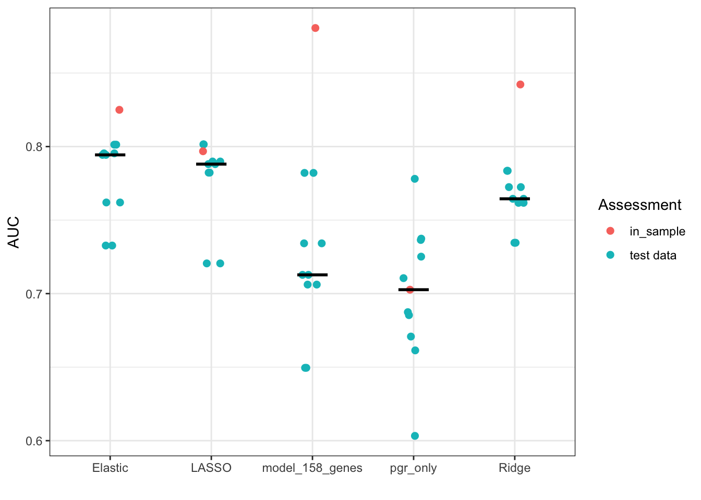
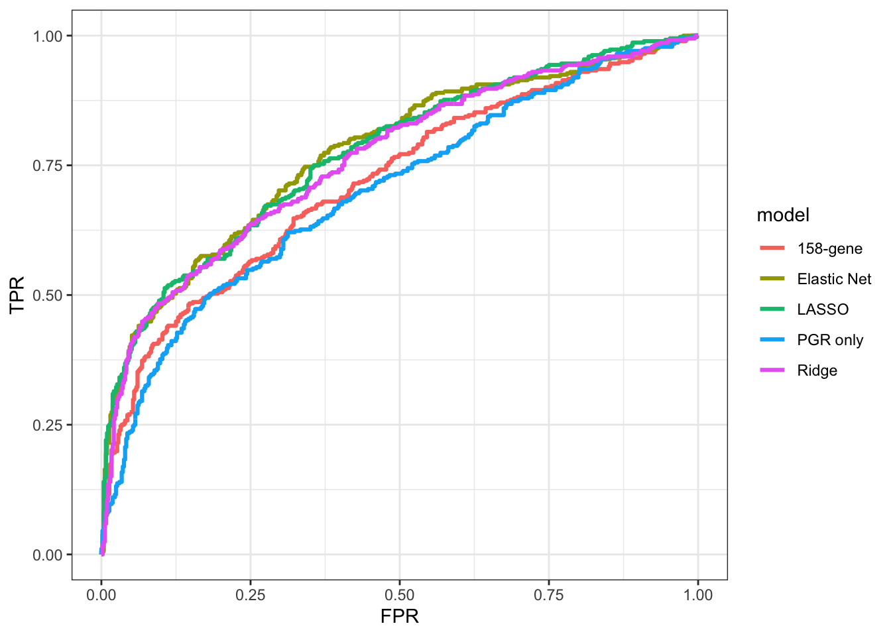

library(tidyverse)
library(curatedTCGAData) # for access to TCGA
library(tidySummarizedExperiment) # containers for genomic data: stores expression/CNV metadata
library(MultiAssayExperiment) # integrates multiple data types (expression + CNV + clinical)
library(broom) # for tidy output of linear models
library(pROC) # Calculates AUC, plos ROC curves for model analysis
library(kableExtra)
library(glmnet) # For regularization (Ridge, Lasso, Elastic Net)
library(corrplot) # for making correlation matrix plots
library(pheatmap)
library(ggcorrplot) # ggplot style correlation plots
library(stringr) # for regex
library(psych) # for pretty summary tables
library(FSA) # for Dunn's test (note that it is instaleld as r-fsa, but loaded as FSA)
library(scales) # get default ggplot colors
library(caret) # for cross validation
library(car) # for running vif
library(ggpubr) # for using annotate() with ggplots GLM and regularization tutorial using TCGA tumor gene expression data
Part 1: Building on Linear Models: When OLMs Fall Short
In the previous tutorial, we explored Ordinary Linear Models (OLMs) and learned that they dominate statistics because of their mathematical guarantees, computational efficiency, and interpretability. We also saw how linear models can handle complex relationships through transformations, polynomials, and interactions.
All of the above is true, yet we must also acknowledge that OLMs make several fundamental assumptions that don’t hold for many types of biological and genomic data:
Continuous response variables: OLMs assume your outcome can take any real value (e.g. not range bound or restricted to integers)
Normal error distribution: Residuals follow a normal distribution
Constant variance: The variance of residual values is the same across all fitted values
Linear relationship: After transformations, the relationship should be linear in parameters
There are many scenarios in which they assumptions hold true and OLMs are a valid analysis tool. In biological and genetic data however, there are multiple scenarios in which these assumptions are clearly violated.
When Biology Breaks OLM Assumptions
Count Data: The RNA-seq problem
Imagine you’re analyzing RNA-seq data, where you measure gene expression as integer values. This integer count-based data has several properties that break OLM assumptions:
Discrete values (non-continuous): You can’t have 2.5 reads
Non-negative: Negative counts are impossible
Variance increases with the mean: RNA-seq count data is inherently heteroscedastic, with higher-expressed genes having greater variance among replicates than low-expressed genes. This variability comes from a combination of biological variation between cells/populations, variance in library prep, and non-perfect read count normalization.
Many zeros: Especially for lowly expressed genes
Binary outcomes in genome-wide association studies (GWAS) analysis
In GWAS, you want to predict probabilities of a specific outcome (disease) but your observations are binary (either disease or not disease). Other examples could be:
P(treatment response | mutation_status)
P(mutation | population_ancestry)
This violates OLM assumptions because:
Observed values are discrete: Only 0 or 1, not continuous
Non-constant variance: The variance of binary outcomes is p(1-p), so it’s highest when probability ≈ 0.5 and lowest near 0 or 1
Bounded predictions: We want probabilities between 0 and 1, but OLMs can predict any value (including negative “probabilities” or values > 1)
Survival Data: The Clinical Trial Problem
Survival analysis studies the time until an event occurs. Despite the name “survival,” the “event” doesn’t have to be death - it could be:
Time until cancer recurrence
Time until treatment failure
Time until infection clearance
For example, in a cancer drug trial, you follow 100 patients for 5 years to see how long the treatment keeps their cancer in remission. In survival analysis, you’re often interested in hazard rates (instantaneous risk of failure) rather than just predicting time-to-event, which requires specialized modeling. For example, you might want to know what is the risk that a patient’s cancer returns in the next moment. This probability will change over the course of time e.g. the hazard rate may initially be high after treatment (non-responders), then lower for a while the treatment is effective, then higher again as the effects of the treatment wear off.
Survival data creates unique challenges:
Censoring: The study ends before some patients experience the event. Patient A is still cancer-free after 5 years - did the treatment “cure” them, or would they relapse in year 6? We don’t know.
Bounded at zero: Survival times can’t be negative
Time-varying risk: The risk of recurrence might change over time (high initially, then decrease, then increase again)
The three challenges create situations that OLMs are not well equipped to handle.
Part 2: Enter Generalized Linear Models (GLMs)
GLMs extend linear models to handle the above scenarios by relaxing key assumptions while maintaining the linear model framework we are familiar with.
The GLM Framework: Three Components
Every GLM consists of three components:
- The outcome distribution family : Specifies the probability distribution of the response variable
- The systematic component: The linear predictor (just like in OLMs): η = β₀ + β₁X₁ + β₂X₂ + …
- The link function: Connects the expected value of Y to the linear predictor: g(μ) = η. In other words, it transforms the continuous output of the linear predictors to conform to the outcome distribution family.
It might seem that the link function and the outcome distribution family are really two sides of the same component, since the link function essentially defines the outcome distribution. This is not incorrect, however there are instances beyond the scope of this tutorial where it can be valuable to think of them as separate components. For example, you can have multiple different link functions that each transform data that conforms to the same outcome distribution.
In practice however, each outcome distribution family is frequently associated with a specific link function:
Binomial → logit link (99% of the time)
Poisson → log link (99% of the time)
Negative Binomial → log link (99% of the time)
Normal → identity link (this just means the expected value of the outcome equals the linear predictor directly. This is what OLMs use and is the easiest to interpret)
Gamma → log link (most common, ~80% of the time)
You may wonder, how can the same link function (e.g. the log link) be associated with different outcome distributions? The reason is that the linear predictor and the link only predict the expected mean value. However the outcome distribution determines the shape of the expected variance around that mean.
When a GLM is fit, the algorithm will determine the regression coefficients (β₀, β₁, etc.) that determine the mean expected value as well as any distribution specific parameters that control the stucture of the expected variance around the mean. For example, given the following outcome distributions:
Poission outcome: No additional parameters needed, since mean = variance by definition.
Negative Binomial outcome: A dispersion parameter, θ (theta), that controls overdispersion is estimated. In the negative binomial, variance = mean + (mean²/θ), which allows for much more variability than the Poisson.
Gamma outcome: Estimates a shape parameter that controls the variance-to-mean relationship. Variance = mean²/shape, so variance increases with the square of the mean.
Normal outcome: Estimates σ² (error variance), which is constant regardless of the mean value.
Key Insight: GLMs Transform the Mean, Not the Data
In OLMs, we sometimes transform the response variable (e.g., log(Y)) to meet assumptions. In GLMs, we transform the expected value of Y through the link function, while keeping the original outcome data intact. This is powerful because we maintain the original scale and interpretation of our data while allowing for predicted expected values to follow a specific distribution that may be different than the training data. For example, we can create a model that predicts P(disease | allele status) even if our training outcome data is binary (disease or not disease).
Part 3: Tutorial with TCGA Breast Cancer data
Introduction: Our Research Goals
Let’s imagine you’re a cancer genomics researcher analyzing The Cancer Genome Atlas (TCGA) breast cancer cohort. Your team wants to understand the relationship between gene expression levels in tumors and whether those tumors are considered to be aggressive, or not.
Specifically, you want to determine:
Are there specific genes whose expression is highly correlated with whether a tumor is aggressive?
Can we build a statistical model that will help us reliably predict whether a tumor is aggressive or not based solely on gene expression data?
Why GLMs will be essential for achieving these goals
- Binary Clinical Outcomes: Through the use of the logit link, GLMs can predict binary outcomes, or probabilities between 0 and 1. GLMs will also be able to properly model the variance structure of the outcome distribution, which is not homoscedastic.
Let’s get started!
Analysis part 1: Load Required Libraries and access TCGA database
Load necessary libraries
We’ll now download our dataset from the curated TCGA data as an S4 object. Curated TCGA data has been preprocessed and cleaned to facilitate downsteam analysis. In contrast, raw TCGA data may be made up of multiple file formats, sample types, may have missing or inconsistent data, and may require normalization and batch correction.
Download the curated breast cancer data from TCGA
# Get the Multi Assay Experiment associated with the BRCA object
# This will download normalized RNA-seq expression data, and clinical data from the BRCA dataset
brca_mae <- curatedTCGAData("BRCA", assays = c("RNASeq2GeneNorm", "clinical"),
version = "2.1.1", dry.run = FALSE)
# print experiment names
cat("Dataset succesfully downloaded\n")
cat("The names of the experiments are:", names(brca_mae), sep = "\n")The above code will download the S4 object. S4 objects have:
- Slots - named components that hold specific types of data
- Classes - Blueprints that define which slots exist and what data types they can hold
- Methods - Functions that work with specific S4 classes
This specific S4 object we downloaded is of a MultiAssayExperiment class – a class designed specifically for multi-omics data. The key slots in a this type of class are:
The experiments slot contains different data types from different experiments: brca_mae@ExperimentList
The colData slot has patient demographic and clinical information: brca_mae@colData
The sampleMap links samples across experiments by showing which samples belong to which patient: brca_mae@sampleMap
The only data we care about now are the RNA-seq data and the patient metadata that we will use classify tumors and aggressive or not aggressive.
Extract the RNA-seq data and patient metadata from brca_mae
# 'assay' is a method that extracts the data matrix from summarizedExperiment objects
expression_data <- assay(brca_mae[["BRCA_RNASeq2GeneNorm-20160128"]])
# In Bioconductor Objects, clinical data is accessed with colData
clinical_data <- colData(brca_mae)
# print description of objects
cat("Expression_data is a", dim(expression_data)[1], "by", dim(expression_data)[2], class(expression_data)[1], "\n",
"Columns are patients IDs and rows are gene names\n",
"Clinical_data is a", dim(clinical_data)[1], "by", dim(clinical_data)[2], class(clinical_data), "\n",
"Rows are patients IDs and each row contains a list with metadata")Expression_data is a 18300 by 1212 matrix
Columns are patients IDs and rows are gene names
Clinical_data is a 1093 by 2684 DFrame
Rows are patients IDs and each row contains a list with metadataIt looks like the expression data has 1212 patients, while the clinical data has only 1093 patients. Let’s first get the subset of both of these datasets that corresponds to the common patients in both of them.
Subset the data to include only patients in both the RNA-seq and clinical metadata objects
# get all patient ids with expression data
expression_patients <- colnames(expression_data)
# use regular expression (stringer package) to get the short from of the patient ID that matches the IF format from the metadata metadata
expression_patients_succinct <-
str_extract(expression_patients, "TCGA-[A-Z0-9]{2}-[A-Z0-9]{4}")
# rename the columns of the expression data dataset
colnames(expression_data) <- expression_patients_succinct
# get the patient ids from the clinical data
clinical_patients <- rownames(clinical_data)
# get the list of overlapping patient ids
common_patients <- intersect(clinical_patients, expression_patients_succinct)
# subset the expression data and clinical data in place
expression_data <- expression_data[, common_patients]
clinical_data <- clinical_data[common_patients,]
cat("There are", length(common_patients), "common patients across the RNA-seq data and clinical metadata\n\n",
"expression_data is now a", class(expression_data), "with", nrow(expression_data), "rows and", ncol(expression_data), "columns\n",
"clinical_data is now a", class(clinical_data), "with", nrow(clinical_data), "rows and", ncol(clinical_data), "columns\n")There are 1093 common patients across the RNA-seq data and clinical metadata
expression_data is now a matrix array with 18300 rows and 1093 columns
clinical_data is now a DFrame with 1093 rows and 2684 columns
Analysis part 2: Define key cancer genes and create a dataset the combines gene expression levels and patient metadata
To get started with GLMs, we’ll first focus our analysis on a small set of genes known to be drivers of certain types of cancers. This will allow us to get comfortable with GLMs before we start building models that use the full dataset with expression levels of 1000+ genes.
Define key cancer genes and extract expression data for them
cancer_genes <- c("ERBB2", "MYC", # Oncogenes
"TP53", "BRCA1", # Tumor suppressors
"ESR1", "PGR") # Hormone receptors
expr_subset <- expression_data[cancer_genes,]
Create a df that contains clinical data of interest to this analysis and gene expression levels of our key genes for each patient
analysis_data <- data.frame(
patient_id = common_patients,
# deomgraphic info
age = as.numeric(clinical_data$patient.age_at_initial_pathologic_diagnosis),
# alive or dead
vital_status = ifelse(clinical_data$patient.vital_status == "dead", 1, 0),
# days from diagnosis to death
days_to_death = as.numeric(clinical_data$patient.days_to_death),
# days from diagnosis to last contact
days_to_last_followup = as.numeric(clinical_data$patient.days_to_last_followup),
# tumor characteristics
stage = clinical_data$pathologic_stage,
# do the cells have estrogen receptors
er_status = clinical_data$patient.breast_carcinoma_estrogen_receptor_status,
# do the cells have progesterone receptors
pr_status = clinical_data$patient.breast_carcinoma_estrogen_receptor_status,
# gene expression data
erbb2_expr = expr_subset["ERBB2", ],
tp53_expr = expr_subset["TP53", ],
brca1_expr = expr_subset["BRCA1", ],
myc_expr = expr_subset["MYC", ],
esr1_expr = expr_subset["ESR1", ],
pgr_expr = expr_subset["PGR", ])
cat("Analysis_data is a", nrow(analysis_data), "by", ncol(analysis_data), class(analysis_data), "\n",
"Row labels are patient IDs and columns contain metadata and gene expression levels")Analysis_data is a 1093 by 14 data.frame
Row labels are patient IDs and columns contain metadata and gene expression levelsWe are now going to define tumors as either ‘aggressive’, or ‘not-aggressive’. This binary outcome variable will be what we try to create a model to predict using GLMs in following sections of this tutorial. For our purposes, we will define aggressive tumors as those that are stage iii or stage iv tumors, or those that do not respond to either progesterone or estrogen hormones.
Clean the stage variable, then define whether a tumor is aggressive or not
analysis_data <- analysis_data %>%
# filter out patient IDs missing or unrealistic ages
filter(!is.na(age), age >= 18, age <= 100) %>%
# make a survival time variable
mutate(survival_time = ifelse(vital_status == 1, days_to_death, days_to_last_followup),
# simple catetogization for tumor status
stage_simple = case_when(
str_detect(stage, regex("stage i[^iv]|stage i$", ignore_case = TRUE)) ~ "Early",
str_detect(stage, regex("stage ii[^i]|stage ii$", ignore_case = TRUE)) ~ "Early",
str_detect(stage, regex("stage iii", ignore_case = TRUE)) ~ "Advanced",
str_detect(stage, regex("stage iv", ignore_case = TRUE)) ~ "Advanced",
TRUE ~ "Unknown"),
stage_clean = str_extract(stage, regex("stage\\s(iv|i{1,3})", ignore_case = TRUE)),
# define aggressive disease
aggressive_disease = case_when(
stage_simple == 'Advanced' ~ 1,
er_status == 'negative' & pr_status == "negative" ~ 1,
TRUE ~ 0)) %>%
# drop unrealistic survivial times
filter(!is.na(survival_time), survival_time > 0, survival_time < 50000) Let’s start to get comforatble with the df we created that now contains both metadata and gene expression data.
Show the structure of each column in the df
str(analysis_data)'data.frame': 1040 obs. of 18 variables:
$ patient_id : chr "TCGA-A1-A0SB" "TCGA-A1-A0SD" "TCGA-A1-A0SE" "TCGA-A1-A0SF" ...
$ age : num 70 59 56 54 61 39 52 39 54 77 ...
$ vital_status : num 0 0 0 0 0 0 0 0 1 0 ...
$ days_to_death : num NA NA NA NA NA NA NA NA 967 NA ...
$ days_to_last_followup: num 259 437 1321 1463 434 ...
$ stage : chr "stage i" "stage iia" "stage i" "stage iia" ...
$ er_status : chr "positive" "positive" "positive" "positive" ...
$ pr_status : chr "positive" "positive" "positive" "positive" ...
$ erbb2_expr : num 12.7 13.7 13.2 13 13.4 ...
$ tp53_expr : num 12.1 10.3 10.5 10.8 10.7 ...
$ brca1_expr : num 8.54 8.09 8.89 8.08 8.34 ...
$ myc_expr : num 12.92 11.11 11.07 10.8 8.77 ...
$ esr1_expr : num 9.75 13.25 12.11 12.95 14.01 ...
$ pgr_expr : num 3.24 9.49 12.81 12.79 13.87 ...
$ survival_time : num 259 437 1321 1463 434 ...
$ stage_simple : chr "Early" "Early" "Early" "Early" ...
$ stage_clean : chr "stage i" "stage ii" "stage i" "stage ii" ...
$ aggressive_disease : num 0 0 0 0 0 1 0 1 1 0 ...Many statistical steps require our data to either have no missing values, or to specify a method for working around them. At this stage let’s just get a sense for how many missing datapoints are in our df.
Show the number of entries in each column that have missing data
str(analysis_data %>% summarise_all(~sum(is.na(.))))'data.frame': 1 obs. of 18 variables:
$ patient_id : int 0
$ age : int 0
$ vital_status : int 0
$ days_to_death : int 936
$ days_to_last_followup: int 104
$ stage : int 8
$ er_status : int 39
$ pr_status : int 39
$ erbb2_expr : int 0
$ tp53_expr : int 0
$ brca1_expr : int 0
$ myc_expr : int 0
$ esr1_expr : int 0
$ pgr_expr : int 1
$ survival_time : int 0
$ stage_simple : int 0
$ stage_clean : int 22
$ aggressive_disease : int 0It’s also helpful to get a broad overview of the range and distribution of the variables in the df. Let’s look at some summary statistics.
Show summary statistics for each of the numeric columns
summary_stats <- analysis_data %>% select_if(is.numeric) %>% describe() %>% round(2) %>% select(-skew, -kurtosis, -vars, -trimmed, -mad)
kbl(summary_stats, caption = "Summary statistcs of TCGA dataset") %>% kable_styling(bootstrap_options = c("striped"))| n | mean | sd | median | min | max | range | se | |
|---|---|---|---|---|---|---|---|---|
| age | 1040 | 58.43 | 13.19 | 58.00 | 26.00 | 90.00 | 64.00 | 0.41 |
| vital_status | 1040 | 0.10 | 0.30 | 0.00 | 0.00 | 1.00 | 1.00 | 0.01 |
| days_to_death | 104 | 1617.35 | 1098.51 | 1409.00 | 116.00 | 4456.00 | 4340.00 | 107.72 |
| days_to_last_followup | 936 | 772.04 | 991.18 | 395.50 | 1.00 | 7067.00 | 7066.00 | 32.40 |
| erbb2_expr | 1040 | 12.88 | 1.50 | 12.71 | 7.27 | 18.54 | 11.26 | 0.05 |
| tp53_expr | 1040 | 10.50 | 0.86 | 10.61 | 7.60 | 12.61 | 5.01 | 0.03 |
| brca1_expr | 1040 | 8.28 | 1.07 | 8.29 | 3.09 | 11.05 | 7.95 | 0.03 |
| myc_expr | 1040 | 10.77 | 1.27 | 10.90 | 6.64 | 14.19 | 7.56 | 0.04 |
| esr1_expr | 1040 | 11.58 | 3.12 | 12.57 | 1.45 | 16.14 | 14.69 | 0.10 |
| pgr_expr | 1039 | 9.07 | 3.36 | 9.77 | -0.55 | 16.48 | 17.03 | 0.10 |
| survival_time | 1040 | 856.57 | 1033.49 | 462.00 | 1.00 | 7067.00 | 7066.00 | 32.05 |
| aggressive_disease | 1040 | 0.42 | 0.49 | 0.00 | 0.00 | 1.00 | 1.00 | 0.02 |
These data tell us that the median age of patients in the dataset is 58, but the range is from 26 to 90. Given the wide age rage, we should consider using this as a predictor in our model as it could have an impact on whether a tumor is aggressive or not. These data also show that 104 patients died during the course of the study. This is not immediately relevant to our analysis but good to generally be aware of.
One piece of information not contained in this table is how many of the patient’s tumors were categorized as aggressive or not aggressive. This is relevant to our analysis as if there are few patients that fall into either of these classes, our mode will struggle to identify variables that are predictive of that class. Furthermore, if e.g. 95% of tumors are non-aggressive, our model may appear to be performing well even if it is just predicting that all tumors are non-aggressive. This type of challenge, called ‘class imbalance’ is pervasive in statistical modeling. Some rules of thumb to identify and manage it are:
When to be concerned about class imbalance:
Minor concern: imbalance up to 70:30 splits are usually manageable
Moderate concern: 80:20 to 90:10 splits may need attention
Major concern: >95:5 splits almost always require specific handling
Absolute sample size matters more than ratios:
<50 samples in the minority class is problematic regardless of total sample size
200 minority class samples is usually sufficient even with moderate imbalance
Diagnostic steps:
Always examine class distribution before modeling
Focus on performance metrics for each class separately (sensitivity, specificity) rather than overall accuracy
Consider whether false negatives or false positives are more costly in your specific context
Let’s check our dataset for class imbalance:
Print the number of patients that have aggressive and non-aggressive tumors
# 1 = aggressive, 0 = non-aggressive
table(analysis_data$aggressive_disease)
0 1
599 441 Our split is fairly close to even and we have > 200 patients in each class, so no need for us to worry about class imbalance in our analysis in our full dataset. If we end up sub-setting our dataset by patients in later analyses, we may want to revisit this question.
Let’s continue to an exploratory analysis of our data.
Analysis part 3: Exploratory analysis of our data
Before getting into modeling, let’s first get a feel for the TCGA data and the relationships among different patient and tumor characteristics. First, we’ll visualize the distribution of expression levels of our key genes.
Plot the gene expression distribution for key genes
# use str_detect to get only the columns whose name contains "_expr"
expr_cols <- names(analysis_data)[str_detect(names(analysis_data), "_expr")]
# check to make sure these cols have data
available_expr_cols <- expr_cols[!is.na(analysis_data[1, expr_cols])]
# make a long df with just the expression data and patient IDs.
# -patient_id tells the function to pivot all columns except patient_id
expr_long <- analysis_data %>% select(patient_id, all_of(available_expr_cols)) %>%
pivot_longer(cols = -patient_id, names_to= "gene",
values_to = 'expression', names_pattern = "(.*)_expr")
# make density plots
ggplot(expr_long, aes(x=expression, fill=gene)) +
geom_density(alpha = .7) +
facet_wrap(~ gene, scales="free") +
labs(x = 'log2 expression level', y = 'Density') +
theme_bw() +
theme(legend.position = 'none') 
The density plots show that there are some very large differences in expression levels in different patients. Some of the distributions even look bimodal, like pgr, esr1, and erbb2. Let’s now see if these gene expression values are correlated across patients, i.e. do certain forms of cancers create gene expression profiles in which multiple of these genes are either highly or lowly expressed together?
Determine correlations between gene expression levels
# get gene expression columns and calculate correlation matrix
expr_matrix <- select(analysis_data, all_of(expr_cols))
# complete.obs tells cor to only uses rows that have data for all variables being compared
corr_matrix <- cor(expr_matrix, use="complete.obs")
ggcorrplot(corr_matrix, hc.order = TRUE, lab = TRUE, type='upper')The plot shows that esr1 (estrogen receptor gene) and pgr (progesterone receptor) expression are moderately correlated. This suggests that when we are modeling, we will likely need to address collinearity between pgr and esr1 expression levels. Let’s dig a bit deeper into the relationships between gene expression data and disease status to get a better feel for the data.
Check for a relationship between gene expression levels and estrogen receptor status of the tumor.
plot_df <- select(analysis_data, er_status, all_of(expr_cols)) %>%
pivot_longer(cols=-er_status, names_to="gene", values_to = 'expression',
names_pattern = "(.*)_expr") %>%
filter(!is.na(er_status), er_status != 'indeterminate')
ggplot(plot_df, aes(x=er_status, y=expression, fill=gene)) +
geom_violin() +
facet_wrap(~ gene) +
theme_bw() +
labs(y='log2 expression', x='estrogen receptor(?)') +
stat_summary(fun = median, geom = "crossbar", width = 0.3, color = "black", fatten = 1) +
theme(legend.position = 'none')The plot shows that er negative tumors have lower levels of expression of the pgr and esr genes. This suggests that their lack of responsiveness to estrogen is due to reduced expression of the estrogen receptor gene, and that as we saw in the plot above, this is correlated with low pgr expression. Let’s confirm this by making analogous plots for response to progesterone.
Plot gene expression levels and progesterone receptor status of the tumor.
plot_df <- select(analysis_data, pr_status, all_of(expr_cols)) %>%
pivot_longer(cols=-pr_status, names_to="gene", values_to = 'expression', names_pattern = "(.*)_expr") %>%
filter(!is.na(pr_status), pr_status != 'indeterminate')
ggplot(plot_df, aes(x=pr_status, y=expression, fill=gene)) +
geom_violin() +
facet_wrap(~ gene) +
theme_bw() +
labs(y='log2 expression', x='progesterone receptor(?)') +
stat_summary(fun = median, geom = "crossbar", width = 0.3, color = "black", fatten = 1) +
theme(legend.position = 'none')Indeed, a lack of responsiveness to progesterone is also associated with reduced expression of the pgr and esr1 genes, as expected. There does not appear to be an obvious relationship between response to either hormone and expression levels of other key genes.
To continue our exploratory analysis, let’s check for a relationship between gene expression levels and the stage of the tumor.
Make plots to compare gene expression levels across different tumor stages
plot_df <- select(analysis_data, stage_clean, all_of(expr_cols)) %>%
pivot_longer(cols = -stage_clean, names_to= "gene", values_to = "expression", names_pattern = "(.*)_expr") %>%
filter(!is.na(stage_clean), stage_clean != 'stage x')
ggplot(plot_df, aes(x=expression, y=stage_clean, fill=gene)) +
geom_violin() +
facet_wrap(~gene) +
stat_summary(fun = median, geom = "crossbar", width = 0.3, color = "black", fatten = 1) +
labs(x='log2 expression') +
theme_bw() +
theme(legend.position = 'none')It’s pretty hard to see whether there are any significant relationships here. It looks like there may be one between pgr and stage but it’s impossible to tell with any certainty looking at this violin plot.
To actually answer this question, let’s use a Kruskal Wallis test (KWT). The KWT is a non-parametric test that determines whether the values for one variables are non-randomly distributed across the values of another variable. It is only applicable to instances when one variable is categorical and the other is numeric. It works by combining all of the gene expression values across all stage groups, then ranking them from 1 -> # patients, then assigning the ranks back to each stage group. It will then determine whether the sums of ranks for each group deviate more than expected under a null distribution (which follows a Chi-Square). Some general guidelines for using this test:
There should be at least 8 observations in each group
There should be at least 20 observations across all groups
Since we want to perform this test on multiple genes, we will group the df by each gene and for each group perform the test.
Run the KWT to test for non-random relationships between gene expression and tumor stage
# make a table that contains the test results for each gene and how many tumors in each stage
kw_results <- plot_df %>%
group_by(gene) %>%
summarise(
n_total = n(),
n_stage_i = sum(stage_clean == "stage i", na.rm = TRUE),
n_stage_ii = sum(stage_clean == "stage ii", na.rm = TRUE),
n_stage_iii = sum(stage_clean == "stage iii", na.rm = TRUE),
n_stage_iV = sum(stage_clean == "stage iv", na.rm = TRUE),
# perfrom the test and create the kw_result object
kw_result = list(kruskal.test(expression ~ stage_clean)),
# get the KW test statistic
statistic = map_dbl(kw_result, "statistic"),
# get the KW p-value
p_value = map_dbl(kw_result, "p.value")) %>%
ungroup() %>%
# remove the kw_result object now that we've extracted the p-value and statistic
select(-kw_result) %>%
arrange(p_value) %>%
# add an adjusted p-value column
mutate(p_adjust = p.adjust(p_value, method = "BH"))
kbl(kw_results %>% mutate(statistic = round(statistic, 2),
p_value = round(p_value, 4),
p_adjust = round(p_adjust, 4))) %>%
kable_styling(bootstrap_options = c("striped"))| gene | n_total | n_stage_i | n_stage_ii | n_stage_iii | n_stage_iV | statistic | p_value | p_adjust |
|---|---|---|---|---|---|---|---|---|
| pgr | 1018 | 177 | 579 | 242 | 20 | 14.50 | 0.0023 | 0.0138 |
| tp53 | 1018 | 177 | 579 | 242 | 20 | 5.22 | 0.1566 | 0.4697 |
| brca1 | 1018 | 177 | 579 | 242 | 20 | 3.76 | 0.2881 | 0.5649 |
| esr1 | 1018 | 177 | 579 | 242 | 20 | 2.80 | 0.4235 | 0.5649 |
| myc | 1018 | 177 | 579 | 242 | 20 | 2.53 | 0.4707 | 0.5649 |
| erbb2 | 1018 | 177 | 579 | 242 | 20 | 1.96 | 0.5801 | 0.5801 |
It looks like there is indeed a significant non-random relationship between stage and the level of pgr expression. To determine exactly what this relationship is, we’ll follow up the KWT with a Dunn’s test (from the fsa package). The Dunn’s test is also a rank-based non-parametric test and will perform pairwise comparisons of expression values between different tumor stage groups. Note that the reason that we use the Dunn’s test as a follow up test to the KWT rather than just starting with it is because of the increased and unnecessary multiple testing burden that would be incurred if we did the Dunn’s test for each gene.
Run the Dunn’s test on the pgr expression levels across tumor stages
# get just the pgr expression data
pgr_df <- filter(plot_df, gene == 'pgr')
dunn_result <- dunnTest(expression ~ stage_clean, data = pgr_df)
kbl(dunn_result$res) %>% kable_styling(bootstrap_options = c("striped"))| Comparison | Z | P.unadj | P.adj |
|---|---|---|---|
| stage i - stage ii | 3.3433260 | 0.0008278 | 0.0049668 |
| stage i - stage iii | 1.2775715 | 0.2014006 | 0.4028011 |
| stage ii - stage iii | -2.0961327 | 0.0360704 | 0.1803521 |
| stage i - stage iv | 2.0959216 | 0.0360891 | 0.1443566 |
| stage ii - stage iv | 0.9113717 | 0.3620995 | 0.3620995 |
| stage iii - stage iv | 1.5812821 | 0.1138135 | 0.3414406 |
So there is only one significant difference in pgr expression level between stages: In stage i the expression levels is significantly higher than in stage ii. The comparisons of stage i to other stages is nominally significant but not after multiple testing correction.
This suggests to us that pgr may be an important gene in a model that predicts whether a tumor is aggressive or not. Let’s end our exploratory analysis here and move into more rigorous modeling of the relationship between gene expression levels and disease status and outcomes. To make things simple as we get started using GLMs, we’ll first fit a very simple model that attempts to predict whether a tumor is aggressive or not based solely on pgr expression level.
Analysis part 4: Does pgr expression level predict tumor aggression?
Let’s start with a very basic question. How well can we predict whether a tumor is aggressive or not given solely the expression level of pgr? To ask this, we’ll build a GLM using a binomial outcome distribution (appropriate for binary outcomes) and the logit link (the standard for binary outcomes). We’ll include pgr expression level and age as predictor variables. Our model will look like this:
\[\ln\left(\frac{\pi_i}{1-\pi_i}\right) = \beta_0 + \beta_1(\text{pgr_expr}_i) + \beta_2(\text{age}_i)\]
Where:
- \(\ln\left(\frac{\pi_i}{1-\pi_i}\right)\)= log odds (or logit) link function that converts a probability into a continuous variable
- \(\pi_i\) = probability of an aggressive tumor
- \(i\) = an individual patient
You can see from the equation that the linear predictor will produce a continues variable that is then used to fit a probability value to \(\pi_i\) .
Note that the linear predictor is often denoted as \(\eta_i\) and the logit link as: \[\text{logit}(\pi_i)\]
As was true for OLM modeling, the probability prediction is just a mean prediction: it does not tell us anything about the expected variance around this mean. In the case of OLMs, the variance is assumed to be normally distributed and constant across all model predictions. This is not true with a logit link GLM. In this case, the variance depends on the value of the predicted probability. Let’s explain:
The variance structure follows a special case of the binomial distribution, where number of trials = 1. This special case of the binomial has a specific name: the Bernoulli distribution. In the Bernoulli, values are either 0 or 1, since each value is a binary outcome resulting from one trial. The mean of this distribution is equal to the probability of success in a given trial (\(p\)), and the variance is \(p(1 - p)\). Let’s see how the variance changes for different values of \(p\):
- \(p = 0.1\), variance \(= 0.1 \times (1 - 0.1) = 0.09\)
- \(p = 0.5\), variance \(= 0.5 \times (1 - 0.5) = 0.25\)
- \(p = 0.99\), variance \(= 0.99 \times (1 - 0.99) = 0.0099\)
We see here that the variance is largest at intermediate probabilities. The same is true for probability prediction from our GLM: A probability prediction of 0.999 is going to have a much more narrow 95% CI than a probability prediction of 0.5.
Okay, let’s move on to making an actual model. First we will model the probability of an aggressive tumor given pgr expression level and the age of the patient.
Create first model using pgr expression and age as predictors
# fir the model
model_pgr <- glm(aggressive_disease ~ pgr_expr + age, data=analysis_data, family = binomial(link= "logit"))
# Note that the coefficients are in logit transformed scale. We will exponentiate them to put them on an odds-ratio scale.
tidy_model_pgr <- tidy(model_pgr, conf.int = TRUE, exponentiate = TRUE) %>% mutate(across(where(is.numeric), ~ round(., 5)))
kbl(tidy_model_pgr) %>% kable_styling(bootstrap_options = 'striped')| term | estimate | std.error | statistic | p.value | conf.low | conf.high |
|---|---|---|---|---|---|---|
| (Intercept) | 13.70234 | 0.36923 | 7.08918 | 0.00000 | 6.70629 | 28.54942 |
| pgr_expr | 0.79052 | 0.02129 | -11.04158 | 0.00000 | 0.75773 | 0.82372 |
| age | 0.98595 | 0.00517 | -2.73623 | 0.00621 | 0.97595 | 0.99595 |
Note that the raw coefficient values returned by the model are logit-transformed. To make them easier to interpret, we exponentiated them when we extracted the model data with tidy(). We’ll discuss this below.
These results reveal that both age and pgr expression level are significant predictors of aggressive disease, as the p-values for these terms are very low. The pgr expression coefficient also has a value of .79 and the age coefficient a value of .98. How should we interpret these?
Interpreting the pgr expression coefficient (0.79): An odds ratio of 0.79 means that for every 1-unit increase in log2 pgr expression, the odds of having an aggressive tumor are multiplied by 0.79. In other words, higher pgr expression is associated with lower odds of aggressive disease. Since 0.79 is less than 1, we can calculate that each unit increase in pgr expression reduces the odds of aggressive disease by approximately 21% (1 - 0.79 = 0.21).
Interpreting the age coefficient (0.98): Similarly, for every 1-year increase in age, the odds of aggressive disease are multiplied by 0.98. This means that older patients have slightly lower odds of aggressive disease, with each additional year of age reducing the odds by approximately 2% (1 - 0.98 = 0.02).
Do these results make biological sense? They do! The negative association between pgr expression and aggressive disease aligns with our understanding of hormone receptor biology. The pgr gene encodes the progesterone receptor, and tumors with higher progesterone receptor expression are typically more responsive to hormone therapy and have better prognoses. The age effect suggests that aggressive disease might be more common in younger patients, which is consistent with some clinical observations.
Finally,remember that these coefficient values have multiplicative effects on the odds, not additive effects on the probability. A patient with both high pgr expression and older age would have their baseline odds multiplied by both factors: odds_new = odds_baseline × 0.79^(pgr_increase) × 0.98^(age_increase).
Let’s visualize the relationship between pgr expression level an probability of an aggressive tumor to help solidify our understanding. We’re going to hold age constant (at it’s mean value), and calculate the probability of an aggressive tumor or a range of pgr expression levels.
Plot the relationship between pgr expression level and model-predicted probability
# create a simulated df with a range of pgr expression levels pair3d with mean patient age
sim_data <- data.frame(
pgr_expr = seq(from = min(analysis_data$pgr_expr, na.rm=TRUE), to = max(analysis_data$pgr_expr, na.rm=TRUE), length.out = 100),
age = rep(mean(analysis_data$age), 100))
# response transforms the predictions to the probability scale, rather than log-odds (link scale)
sim_data$pred_probs <- predict(model_pgr, newdata = sim_data, type="response")
# plot the results
ggplot(sim_data, aes(x = pgr_expr, y=pred_probs)) +
geom_point(color="#F8766D") +
theme_bw() +
labs(y='predicted probability', x = 'log2 pgr expression')We can see that there is a logistic relationship between expression level and probability, and that at intermediate expression levels, the affect of changing the expression level has the greatest effect on the predicted probability. This informs on why predicted probabilities in the middle range have higher variance: they are more sensitive to small differences in the output of the linear predictor within this range!
Okay, so we have a basic understanding of how this very simple GLM works. Now let’s assess how well it fits our training data. If this were an OLM, we would assess this with an R² value, which is calculated as an average of the residuals (the distance between a data point and the model fit). This calculation makes sense for an OLM where there residuals are assumed to follow a normal distribution and be constant across all predicted values. This is not true for GLMs, and thus calculating R² doesn’t really make sense. While there are some pseudo R² alternatives that can be calculated, a better and more common metric is to determine the Receiver Operating Characteristic (ROC) curve and calculate Area Under the Curve (AUC). This provides a metric describing how much better the model fits the data compare to a null model. The ROC curve plots the true positive rate (sensitivity) against the false positive rate (1 - specificity) at various probability thresholds and helps visualize model fit.
The (AUC) is a single value that summarizes the overall performance of the model.
AUC = 1: Perfect model, distinguishes between all positive and negative cases.
AUC = 0.5: Useless model, no better than random chance.
AUC > 0.7: Intermediate fit. Whether this is adequate or not depends on your priorities.
Let’s plot the ROC curve and calculate the AUC for our single gene model. To do this, we’ll need to get the tumor status predicted from our the model for each patient, then compare these to the actual tumor status. We’ll use roc from the pROC library to do this.
Make ROC plot
# predict probabilites of aggressive tumor from the analysis_data
pred_probs <- predict(model_pgr, newdata = analysis_data, type = "response")
# compare the predicted binary outcomes and the actual binary outcomues
roc_obj_pgr <- roc(response = analysis_data$aggressive_disease, predictor = pred_probs)Setting levels: control = 0, case = 1Setting direction: controls < cases# put results in a df for plotting
roc_df_pgr <- data.frame(model = 'pgr + age', specificity = rev(roc_obj_pgr$specificities), tpr = rev(roc_obj_pgr$sensitivities))
# plot TPR vs FPR
ggplot(roc_df_pgr, aes(x = 1 - specificity, y = tpr)) +
geom_line(color = "#00B0F6", linewidth=1.1) +
geom_abline(intercept = 0, slope = 1, linetype = "dashed", color = "gray") +
labs(x = "False Positive Rate (1 - Specificity)", y = "True Positive Rate (Sensitivity)") +
coord_fixed(ratio = 1) +
annotate("text", x=.2, y=.9, label = paste("AUC = ", round(auc(roc_obj_pgr), 3)), size=6)+
theme_bw()The ROC curve shows that our model is much better than a null model! However, it’s not great. At an approximate sensitivity of .5 (correctly identifying half of the tumors as aggressive, it will call ~20% of the non-aggressive tumors as aggressive). We can do better. Let’s move into the next section of our analysis where we fit a more complex model.
Analysis part 5: Does a model that incorporates all 6 key genes predict tumor status better?
Let’s now build a more comprehensive model that predicts tumor aggresssion from age and the expression of all six genes of interest.
Build a model that uses all 6 key genes and age as a predictors
# fir the model
model_6_genes <- glm(aggressive_disease ~ age + erbb2_expr + tp53_expr + brca1_expr +
myc_expr + esr1_expr + pgr_expr, data = analysis_data,
family = binomial(link= "logit"))
# extract the coefficients
tidy_model_6_genes <- tidy(model_6_genes, conf.int = TRUE, exponentiate = TRUE) %>% mutate(across(where(is.numeric), ~ round(., 5)))
kbl(tidy_model_6_genes) %>% kable_styling(bootstrap_options = 'striped')| term | estimate | std.error | statistic | p.value | conf.low | conf.high |
|---|---|---|---|---|---|---|
| (Intercept) | 132.81629 | 1.55099 | 3.15215 | 0.00162 | 6.50082 | 2862.74289 |
| age | 1.00284 | 0.00568 | 0.49976 | 0.61724 | 0.99174 | 1.01410 |
| erbb2_expr | 0.96215 | 0.05058 | -0.76287 | 0.44554 | 0.87121 | 1.06256 |
| tp53_expr | 0.93279 | 0.09196 | -0.75656 | 0.44931 | 0.77879 | 1.11741 |
| brca1_expr | 1.03664 | 0.07272 | 0.49488 | 0.62068 | 0.89870 | 1.19554 |
| myc_expr | 1.00714 | 0.06177 | 0.11523 | 0.90826 | 0.89230 | 1.13702 |
| esr1_expr | 0.70466 | 0.03787 | -9.24294 | 0.00000 | 0.65300 | 0.75764 |
| pgr_expr | 0.95404 | 0.02905 | -1.61941 | 0.10536 | 0.90131 | 1.01016 |
The results from our six-gene model reveal some interesting changes compared to the pgr-only model. Most notably, only esr1 expression emerges as a significant predictor: (p < 0.001, odds ratio = 0.70). This means that for every 1-unit increase in log2 esr1 expression, the odds of aggressive disease decrease by 30%.
What happened to our previous significant predictors?
Both pgr expression and age, which were significant in the simpler model, are no longer statistically significant. This shift illustrates a key principle in multivariate modeling: when variables are correlated, it becomes statistically difficult to detect their individual contributions. The model may assign most explanatory power to one predictor even when multiple predictors have genuine independent effects.
In the single-gene model, pgr appeared significant because it was capturing the broader hormone receptor biology associated with tumor aggression. However, when esr1 was added to the model, it emerged as the stronger predictor of this same underlying biology. This doesn’t mean pgr is unimportant for tumor aggression - rather, esr1 better represents the hormone-responsive phenotype that both genes contribute to. Since pgr and esr1 are correlated, the model assigns most of the explanatory power to the stronger predictor (esr1), making pgr appear non-significant in this context.
This situation highlights an important distinction between explanation and prediction. When dealing with correlated predictors, individual coefficient values may not accurately reflect true causal relationships - the model may arbitrarily “choose” one correlated predictor over another. However, the model’s predictive power doesn’t depend on perfectly identifying causal relationships. If our primary goal is predicting tumor aggressiveness in new patients, a model with imperfect coefficient interpretations can still perform well, provided we validate its predictive accuracy through proper testing methods like cross-validation (see below).
None of the other cancer genes (erbb2, tp53, brca1, myc) reached statistical significance in this model. This doesn’t necessarily mean these genes are unimportant for cancer biology, but rather that their effects on aggressive disease may be more complex or require different modeling approaches (such as interaction terms or non-linear transformations).
Should we keep these non-significant genes in the model for future predictions?
This question highlights a fundamental challenge in high-dimensional genomics data: we have many potentially important variables but limited statistical power to detect their individual effects. This creates a tradeoff:
The dilemma:
- Keep all genes: Biologically comprehensive but risks overfitting and reduces statistical power by reduced degrees of freedom. Variance and coefficient instability will also increase when predictors are collinear.
- Remove non-significant genes: Statistically cleaner but may discard important biological information and could miss complex interactions.
In the next analysis sections, we will deal with these challenges using a technique called regularization that will help to determine which predictor variables to keep so as to maximize predictive power without adding unnecessary complexity or overfitting risk. For now however, let’s move on towards assessing whether this model fits the training data better than the single gene pgr model. Just out of curiosity, we’ll also test how a model that only includes ers1 expression compares as well.
Make ROC plots for the new model and compare to the single gene model
# Calculate ROC curves and plot data for the 6-gene model
pred_probs_6_genes <- predict(model_6_genes, newdata = analysis_data, type = "response")
roc_obj_6_genes <- roc(response = analysis_data$aggressive_disease,
predictor = pred_probs_6_genes)
roc_df_6_genes <- data.frame(model = '6_genes + age',
specificity = rev(roc_obj_6_genes$specificities),
tpr = rev(roc_obj_6_genes$sensitivities))
## create the esr1 only model and calculate ROC and plot data
model_esr1 <- glm(aggressive_disease ~ esr1_expr, data = analysis_data,
family = binomial(link= "logit"))
pred_probs_esr1 <- predict(model_esr1, newdata = analysis_data, type = "response")
roc_obj_esr1 <- roc(response = analysis_data$aggressive_disease,
predictor = pred_probs_esr1)
roc_df_esr1 <- data.frame(model = 'esr1', specificity = rev(roc_obj_esr1$specificities),
tpr = rev(roc_obj_esr1$sensitivities))
# combine the 3 ROC dataframes by row to make a tidy table
combined_roc_df <- rbind(roc_df_pgr, roc_df_6_genes, roc_df_esr1)
# plot all three ROC curves
ggplot(combined_roc_df, aes(x=1-specificity, y=tpr, color=model)) +
geom_line(linewidth = 1.1) +
geom_abline(intercept = 0, slope = 1, linetype = "dashed", color = "gray") +
theme_bw() +
labs(x = "False Positive Rate (1 - Specificity)", y = "True Positive Rate (Sensitivity)") +
coord_fixed(ratio = 1) +
scale_color_manual(values = c("6_genes + age" = hue_pal()(3)[1], "esr1" = hue_pal()(3)[2], "pgr + age" = hue_pal()(3)[3]),
labels = c(paste("6-gene model (AUC =", round(auc(roc_obj_6_genes), 3), ")"),
paste("esr1 model (AUC =", round(auc(roc_obj_esr1), 3), ")"),
paste("pgr model (AUC =", round(auc(roc_obj_pgr), 3), ")")))The 6-gene model clearly fits the data better than the pgr-only model. The esr1 curve is essentially the same as the 6-gene model, indicating that nearly all of the predictive power of the 6-gene model is due to the inclusing of esr1. Apparantly, at least in the context of the training dataset, the other genes and the age parameter do not add any predictive power beyond esr1 expression.
Okay, time to move on to even more complex models, and to incorporate regularization.
Analysis part 6: Does a model that incorporates 100+ genes fit the data better?
Let’s now try to fit a model that uses more genes to see if adding more genes beyond just esr1 provides more predictive power. We’ll start by assuming that the most informative genes in the dataset will be the ones that vary most across patients. So we’ll start by extracting the top 100 genes with the most variance.
Get the top 100 most variables genes from the expression_data df
# calculate the variance for each gene
# apply usage: apply(df to act on, 1=rowise, 2=columnwise, function to apply, remove missing data before calculation)
expression_variance <- apply(expression_data, 1, var, na.rm=TRUE) # creates names numeric vector
top_100_variance_gene_names <- names(sort(expression_variance, decreasing = TRUE))[1:100]
expr_data_top_100_var <- t(expression_data[top_100_variance_gene_names,]) # transpose so that rows are patient ids, same as in analysis_data
expr_data_top_100_var <- expr_data_top_100_var[rownames(analysis_data),] # keep only the patients that passed all filtering and are in analysis_data
# check that the order of patient ids is the same in analysis_data and expr_data_top_100_var
if (identical(rownames(expr_data_top_100_var), rownames(analysis_data))) {
cat("Row names of the expr_data_top_100_var and analysis_data datframes are identical")}Row names of the expr_data_top_100_var and analysis_data datframes are identical
Create a df with metadata and expression data for the top 100 variable genes
# merge the relevant columns from analysis_data with the top 100 expression values
analysis_data_100_genes <- cbind(select(analysis_data, !matches("_expr|_high|_low")), expr_data_top_100_var)
cat("analysis_data_100_genes is a", nrow(analysis_data_100_genes), "by", ncol(analysis_data_100_genes), class(expr_data_top_100_var), "with patient ids as rows and metadata and log2 gene expression values as columns")analysis_data_100_genes is a 1040 by 112 matrix array with patient ids as rows and metadata and log2 gene expression values as columnsLet’s now test whether there is non-nan expression data for all of these genes. Since the GLM only can compute on patients that have non-nan values for all predictor variables, we want to know how many patients this is true for.
Print how many patients have expression data for all 100 genes, age, and tumor status
complete <- complete.cases(analysis_data_100_genes[,c("age", "aggressive_disease", top_100_variance_gene_names)])
cat("There are",sum(complete), "patients with non-nan data for all predictor variables, and", sum(!complete), "patients with missing data in one or more variables")There are 0 patients with non-nan data for all predictor variables, and 1040 patients with missing data in one or more variables0 patients with complete data! This is going to be a problem. How to deal with this? We have a few options:
- Remove genes that have missing data for >X% of patients and see if this gets us to a reasonable number of patients with non-missing data.
- Impute the missing expression values as the median of the existing values (this is crude and underestimates variance) or use more complex techniques that consider co-variances between expression levels.
For this tutorial, we will do #1, but in order to end up with 100+ genes to include in our model, we’ll start by selecting a larger group of genes (1000 instead of 100), then subsetting these to only include the genes that have expression data for >95% of patients.
Get 1000 most variable genes and subset for those that have data for >95% of patients
top_1000_variance_gene_names <- names(sort(expression_variance, decreasing = TRUE))[1:1000]
# transpose so that rows are patient ids, same as in analysis_data
expr_data_top_1000_var <- t(expression_data[top_1000_variance_gene_names,])
# keep only the patients that passed all filtering and are in analysis_data
expr_data_top_1000_var <- expr_data_top_1000_var[rownames(analysis_data),]
# apply function col-wise
propr_missing <- apply(expr_data_top_1000_var, 2, function(x) sum(is.na(x))/length(x))
cat("There are", sum(propr_missing <.005), "genes with missing data for less than .05% of patients")There are 158 genes with missing data for less than .05% of patients158 genes is a much better number to work with. Let’s merge these genes with the analysis df and see how many patients there are with complete data for all predictors
Select the 158 genes and merge with the analysis_df
# get the names of the 158 genes
keepr_gene_names <- colnames(expr_data_top_1000_var[,propr_missing < .005])
# merge the 158 genes with the analysis data
analysis_data_158_genes <- cbind(select(analysis_data, !matches("_expr|_high|_low")), expr_data_top_1000_var[,keepr_gene_names])
# usr complete.cases() to subset to only patients with no missing data
complete <- complete.cases(analysis_data_158_genes[,c("age", "aggressive_disease", keepr_gene_names)])
cat("There are",sum(complete), "patients with non-NaN data for all predictor variables, and", sum(!complete), "patients with missing data in one or more variables")There are 900 patients with non-NaN data for all predictor variables, and 140 patients with missing data in one or more variables900 is certainly better than 0! Let’s proceed to fitting the model.
Fit model with 158 genes and age as predictors
# create the predictor string
formula_string <- paste("aggressive_disease ~ age +", paste(keepr_gene_names, collapse=' + '))
# fit the GLM
model_158_genes <- glm(as.formula(formula_string), data = analysis_data_158_genes, family = binomial(link="logit"))
tidy_model_158_genes <- tidy(model_158_genes, conf.int = TRUE, exponentiate = TRUE) %>% mutate(across(where(is.numeric), ~ round(., 5))) %>% arrange(p.value)Since we have 159 predictors, let’s do a multiple testing correction on the coefficient p-values.
Do multiple testing correction and display model stats for top predictors
# add an adjusted p-value column
tidy_model_158_genes <- tidy_model_158_genes %>% mutate(p.adjusted = p.adjust(p.value, method = "BH"))
# display the top 10 rows in the table
kbl(tidy_model_158_genes[1:10,]) %>% kable_styling(bootstrap_options = 'striped')| term | estimate | std.error | statistic | p.value | conf.low | conf.high | p.adjusted |
|---|---|---|---|---|---|---|---|
| ESR1 | 0.65805 | 0.10815 | -3.86938 | 0.00011 | 0.53023 | 8.108600e-01 | 0.0176000 |
| PKP1 | 0.78389 | 0.07725 | -3.15201 | 0.00162 | 0.67217 | 9.104400e-01 | 0.1104000 |
| CLIC6 | 0.85203 | 0.05199 | -3.07990 | 0.00207 | 0.76866 | 9.427900e-01 | 0.1104000 |
| TF | 0.79993 | 0.07526 | -2.96633 | 0.00301 | 0.68774 | 9.242400e-01 | 0.1204000 |
| SLC27A2 | 0.82423 | 0.06733 | -2.87098 | 0.00409 | 0.72098 | 9.393100e-01 | 0.1216000 |
| NELL2 | 1.18577 | 0.06051 | 2.81613 | 0.00486 | 1.05414 | 1.336890e+00 | 0.1216000 |
| ADAMTS16 | 0.80125 | 0.07950 | -2.78711 | 0.00532 | 0.68448 | 9.353300e-01 | 0.1216000 |
| FMO2 | 1.33410 | 0.10664 | 2.70319 | 0.00687 | 1.08609 | 1.651250e+00 | 0.1228444 |
| WFDC2 | 0.85431 | 0.05830 | -2.70102 | 0.00691 | 0.76125 | 9.571400e-01 | 0.1228444 |
| (Intercept) | 3774.67594 | 3.22956 | 2.55021 | 0.01077 | 7.16268 | 2.329064e+06 | 0.1620364 |
There are>9 genes with nominally significant p-values, but only esr1 is significant after BH multiple testing correction. We’ll talk about ways to better assess and improve this model in a minute, but first let’s just compare how well this model fits the training data to how well the esr1 only model fits the training data.
Plot ROC curvves for the 158 gene model and the esr1 only model
# predict tumor status using the 158 gene model and make a plot df
pred_probs_158_genes <- predict(model_158_genes, newdata = analysis_data_158_genes,
type = "response")
roc_obj_158_genes <- roc(response = analysis_data_158_genes$aggressive_disease,
predictor = pred_probs_158_genes)
roc_df_158_genes <- data.frame(model = '158 genes',
specificity = rev(roc_obj_158_genes$specificities),
tpr = rev(roc_obj_158_genes$sensitivities))
plot_df <- rbind(roc_df_158_genes, roc_df_esr1)
ggplot(plot_df, aes(x=1-specificity, y=tpr, color=model)) +
geom_line(linewidth=1.1) +
labs(x='FPR', y='TPR') +
theme_bw() +
scale_color_manual(values = c("158 genes" = hue_pal()(3)[1], "esr1" = hue_pal()(3)[3]),
labels = c(paste("158 genes model (AUC =", round(auc(roc_obj_158_genes),3), ")"),
paste("esr1 model (AUC =", round(auc(roc_obj_esr1), 3), ")")))The 158 gene model does fit the training data much better than the esr1 only model. This looks pretty good, but now we have to consider some of the concerns related to having a model with so many different predictors. Let’s describe these:
- Multicollinearity - With so many predictor variables, it is likely that some will be collinear, thus making the parameter values unstable (prone to large changes given small differences in training data), and likely inaccurate, as the model has a hard time determining which of a set of collinear parameters is actually predictive of the outcome (we already saw this above with pgr and esr1). This problem makes the model prone to overfitting, as the inaccurate parameter values will produce poor predictions on a new test dataset. This is also a problem for interpretation of the model, as the parameters values will likely be inaccurate, and will change dramatically if even small changes are made to the training data.
- Overly complex model with too many parameters - As a general rule of thumb, you want there to be >10X as many samples as parameters to estimate, such that the model has sufficient degrees of freedom to avoid overfitting (the 158 gene model only has 900 patients, so this condition is not met). Even if this condition is met, it’s a good idea to consider removing unnecessary parameters, such as those that don’t significantly contribute to prediction. Unnecessary parameters can also result in overfitting.
The potential negative consequence of multicollinearity, too-few degrees of freedom and/or an overly complex model are overfitting, and poor predictive performance on test datasets. How can we assess whether this is happening? Let’s use k-fold cross validation to train and test our model on distinct datasets. If the model performs significantly worse on the test datasets than it’s fit to the training dataset, this is a sign of overfitting.
To do k-fold cross validation, we’ll use the caret package. This is a powerful package that allows us to systematically evaluate model performance through automated cross-validation procedures and can be used to perform k-fold cross validation on a wide variety of different linear model and machine learning model types, from simple linear regression to complex ensemble methods. The caret package handles the complex logistics of splitting data, fitting models on training folds, making predictions on test folds, and aggregating performance metrics across all iterations.
How k-fold cross validation works:
Split the data: Divide your dataset into k equal-sized “folds” (commonly k=5 or k=10)
Iterative training and testing: For each fold:
Use k-1 folds as training data to fit the model
Use the remaining fold as test data to evaluate performance
Record the performance metric (e.g., AUC)
Aggregate results: Calculate the mean and standard deviation of performance across all k iterations
How this reveals overfitting:
Training performance reflects how well the model fits the data it was trained on
Cross-validation performance reflects how well the model generalizes to new, unseen data
A large gap between these two indicates the model has memorized training-specific patterns rather than learning generalizable relationships
In our 158-gene model, we’ll compare the training AUC (how well it fits the original data) to the cross-validation AUC (how well it predicts on held-out test sets). If we see a substantial drop in performance, this confirms our suspicion of overfitting due to the high-dimensional predictor space and multicollinearity issues we identified.
Run 5-fold cross validation
# set up train / test algorithm
train_control <- trainControl(
method = "cv", # define method is cross-validation
number = 5, # k = 5 folds
classProbs = TRUE, # save probability predictions to calculate AUC
summaryFunction = twoClassSummary, # Use summary for binary classification
savePredictions = TRUE)
# train cannot handle any rows with missing data so I will need to remove them from the dataset
analysis_data_158_genes_clean <- analysis_data_158_genes[complete.cases(analysis_data_158_genes[, c("age", keepr_gene_names)]), ]
# when modeling using a binomial, the outcome variables must be a factor with two levels
analysis_data_158_genes_clean$aggressive_disease <- factor(analysis_data_158_genes_clean$aggressive_disease, levels = c("0", "1"), labels=c("non_aggressive", "aggressive"))
# Run the CV
model_158_gene_cv <- train(
as.formula(formula_string),
data = analysis_data_158_genes_clean,
method = "glm",
family = "binomial", # For a logistic regression model
trControl = train_control,
metric = "ROC") # specify how performance is assessed. There are many options here. ROC refers to the Area Under the ROC Curve (AUC). Another reasonable option for this dataset would be "logLoss", which compares the predicted probabilities to the true outcomes, and thus penalizes confident wrong predictions strongly.
Print the AUC values for model performance on the 5 test sets
cat("The AUC values for the 5 resamples are:\n",
paste(round(model_158_gene_cv$resample$ROC,3), collapse='\n'),
"\nThe mean is", round(mean(model_158_gene_cv$resample$ROC),3),
"and the SD is", round(sd(model_158_gene_cv$resample$ROC),3))The AUC values for the 5 resamples are:
0.677
0.756
0.664
0.737
0.747
The mean is 0.716 and the SD is 0.043Compared to our AUC for the training performance of 158 gene model (AUC=.881), these AUC values from cross-validation are substantially worse. This is a strong indication that our 158 gene model is overfit to the training data. As mentioned above, this is likely due to a combination of multicollinearity and too few patients for the 159 predictors. To explicitly assess collinearity, we’ll use the vif package.
Run vif on the 158 gene model
vif_values <- sort(vif(model_158_genes), decreasing=TRUE)[1:10]
vif_df <- data.frame(gene = names(vif_values), vif_value = vif_values)
kbl(vif_df, row.names = FALSE) %>% kable_styling(bootstrap_options = 'striped')| gene | vif_value |
|---|---|
| PLIN1 | 33.32577 |
| GPD1 | 25.49730 |
| PLIN4 | 21.74640 |
| KCNIP2 | 21.36841 |
| COL10A1 | 18.62743 |
| FABP4 | 17.90314 |
| SFRP1 | 17.05098 |
| COL17A1 | 16.21052 |
| IGJ | 15.71163 |
| AKR1C1 | 15.42158 |
These are only the top 10 vif values, and all are much greater than 10, indicating very problematic multicollinearity. Clearly the 158 gene model has some serious issues that are causing overfitting. In the next section we’ll work through how to manage this.
Analysis part 7: Can regularization methods improve model performance?
The High-Dimensional Challenge in Cancer Genomics
Our 158-gene model demonstrates a classic problem in cancer genomics: we have far more predictors than we can reliably estimate with our sample size. The cross-validation results showed substantial overfitting (training AUC = 0.881 vs. CV AUC ≈ 0.75), and the VIF analysis revealed severe multicollinearity among our predictors. This situation is endemic in genomics research for the following reasons:
Wide data: Thousands of genes but only hundreds of patients
Correlated predictors: Genes in the same pathway often have similar expression patterns
Traditional approaches like stepwise regression or manual feature selection are inadequate for this scenario because they make hard “keep/remove” decisions that ignore the uncertainty in our parameter estimates and the interconnected nature of biological systems.
Regularization: A Principled Approach to Model Complexity
Regularization techniques address overfitting by adding a penalty term to the loss function that shrinks coefficient estimates toward zero. What is the loss function? The loss function is the function that the model seeks to minimize the result of during fitting. In non-regularized models, the loss function is described as:
Loss Function = Prediction Error
And so the best fitting model will be the one with the smallest prediction error. The downside of optimizing the model in this way is that is allows for the possibility that many predictors get assigned coefficients that make incremental reductions in the loss function but that result in a model that is overfit to the training data.
In regularization, model fitting still attempts to minimize the loss function, but the function looks different:
Loss Function = Prediction Error + λ × Penalty Term
The key here is the “Penalty Term”, which can be calculated in different ways, but is always proportional to the size of the parameter coefficients. The different ways in which the penalty term can be calculated define the different types of regularization:
LASSO Regression (L1 Penalty)
Penalty: λ × Σ|βᵢ| (sum of absolute coefficients)
Effect: Due to the geometry of the penalty function, this shrinks many coefficients to exactly zero, thereby performing automatic variable selection
Best for: When only a sparse subset of variables are truly important, e.g. when the expectation is that key driver mutations or biomarkers may have dominant effects
Ridge Regression (L2 Penalty)
Penalty: λ × Σβ²ᵢ (sum of squared coefficients)
Effect: Due to the geometry of the penalty function, this shrinks all coefficients but keeps all variables in the model
Best for: When many variables contribute small effects, e.g. in cancer detection where dysregulation of entire pathways, rather than just individual genes, is common
Elastic Net (Combined L1 + L2)
Penalty: λ × (α × Σ|βᵢ| + (1-α) × Σβ²ᵢ)
Effect: Balances variable selection with handling correlated predictors
Best for: High-dimensional data with groups of correlated predictors, e.g. balancing pathway level effects with large effect predictors
How might our final model look different across these three methods?
In general, we expect a regularized model to sacrifice some amount of goodness of fit to the training data, but to perform far better for prediction. More specifically, given our 158 gene model:
LASSO will:
Pick representative genes from correlated groups, thereby “forcing” a choice among correlated predictors
Set the rest to exactly zero
Return a sparse, interpretable model
Note that there is instability in the process of picking genes from correlated groups, and that small changes in the training data may result in different genes being picked
Ridge will:
Give small coefficients to many of the 158 genes, thus handling correlated genes by shrinking them all proportionally
Keep all variables in the model, making interpretation difficult
Provide stable results but less biological insight about potentail key drivers
Elastic Net will:
Combines both approaches: tends to keep small groups of correlated predictors with shrunken coefficients
Partially addresses multicollinearity through selection, partially through shrinkage
Okay, but what about the λ in the loss function?
λ is a regularization parameter that determines the strength of the regularization effect. It is effectively a dial that determines the trade-off between model accuracy and model simplicity (and its ability to generalize).
A λ value of .001 is considered a light penalty (higher accuracy), whereas a value of 10 is a high penalty (greater simplicity). A non-regularized model has a λ value of 0.
How does λ get chosen?
In practice, we don’t guess λ - we use cross-validation to find the optimal value:
Try many λ values (e.g., 0.001, 0.01, 0.1, 1, 10, 100)
For each λ, fit the model and test performance on held-out data using k-fold CV
Pick the λ that gives the best cross-validated performance
Towards our implementation of regularization
Regularization can be performed through a variety of software packges, including caret and glmnet. For our first demonstration of regularization via elastic net, we’ll directly use the glmnet package since it provides built-in plotting functions that effectively visualize what the regularization is doing (i.e. how coefficients shrink with increasing λ). After examining these plots, we’ll shift to using caret, which internally calls glmnet but provides a unified framework for comparing different regularization methods and systematically tuning hyperparameters.
Note that glmnet requires the data to be in a specific format:
A predictor matrix (X)
A response vector (Y)
Neither can have missing values
Create the X and Y objects that will be input to glmnet
complete_cases <- complete.cases(analysis_data_158_genes[, c("age", "aggressive_disease", keepr_gene_names)])
analysis_df_complete <- analysis_data_158_genes[complete_cases, ]
predictors_complete <- analysis_df_complete[,c("age", keepr_gene_names)]
# Create predictor matrix - glmnet expects a matrix, not data frame
# "." includes all cols in the df
# model.matrix adds an intercept column as the first column. We need to remove it, hence [,-1]
X <- model.matrix(~ ., data = predictors_complete)[, -1]
y <- analysis_df_complete$aggressive_disease
cat("Predictor matrix dimensions:", dim(X), "\n",
"Response vector length:", length(y), "\n",
"Number of predictors:", ncol(X))Predictor matrix dimensions: 900 159
Response vector length: 900
Number of predictors: 159
Fit Elastic Net with cross validation
set.seed(123) # for reproducible results
# Fit elastic net with cross-validation
# alpha = 1 (LASSO), alpha = 0 (Ridge), alpha = 0.5 (Elastic Net). Alpha controls the mixing ration between Ridge and Lasso regularization.
cv_elastic <- cv.glmnet(X, y, family = "binomial", alpha = 0.5, nfolds = 5)
# make the lambda vs AUC plot
par(mar = c(5, 4, 6, 2) + 0.1) # Default is c(5, 4, 4, 2) + 0.1
plot(cv_elastic, main = "Cross-Validation Curve for Elastic Net")This plot shows prediction error (difference between observed and predicted values) for each set of cross-validation test sets as function of different λ values. The numbers along the top of the plot report the number of predictors that are non-zero at each λ value. The left dashed line reports λ.min (the λ value that minimizes cross-validation error and gives the best predictive performance), and the right dashed line reports λ.1se (the largest λ value within one standard error of the minimum, which gives a siimpler model with similar performance).
λ.min optimizes for prediction accuracy, while λ.1se follows the “one standard error rule” - choosing the simplest model whose performance is not significantly worse than the best model. In practice, λ.1se often provides better generalization because it reduces overfitting by selecting fewer predictors.
Let’s now compare how these Elastic Net error values and lambda λ compare to regularization via Ridge and LASSO. For this, we’ll switch to accessing regularization tools through the caret package, as, IMO, it is simpler.
Compare LASSO, Ridge, and Elastic Net via 5-fold CV and print results
n_folds <- 5
# Set up cross-validation control
train_control <- trainControl(
method = "cv",
number = n_folds,
classProbs = TRUE,
summaryFunction = twoClassSummary,
savePredictions = TRUE)
# Use the same outcome factor variable and model matrix X variable as we used with glmnet
y <- analysis_data_158_genes_clean$aggressive_disease # must be a 2-level factor variable
X <- analysis_data_158_genes_clean[,c("age", keepr_gene_names)]
#CV Ridge model:
model_ridge <- train(
x = X, y = y,
method = "glmnet", # this is where we specify we want to to glmnet
trControl = train_control,
tuneGrid = expand.grid(alpha = 0, lambda = seq(0.001, 1, length = 100)), # define alpha and lamda values to test
metric = "ROC") #. use logloss if we want to use deviance based error calculation
#CV LASSO model:
model_lasso <- train(
x = X, y = y,
method = "glmnet",
trControl = train_control,
tuneGrid = expand.grid(alpha = 1, lambda = seq(0.001, 1, length = 100)),
metric = "ROC")
# CV elastic model
model_elastic <- train(
x = X, y = y,
method = "glmnet",
trControl = train_control,
tuneGrid = expand.grid(alpha = 0.5, lambda = seq(0.001, 1, length = 100)),
metric = "ROC")
# Extract ROC of best models. This is also the same as the bestTune model, but model$bestTune only contains hyperparameter values and not ROC
ridge_best_roc <- max(model_ridge$results$ROC)
lasso_best_roc <- max(model_lasso$results$ROC)
elastic_best_roc <- max(model_elastic$results$ROC)
# Get standard errors and SD / sqrt (n-folds)
ridge_ROC_se <- model_ridge$results$ROCSD[which.max(model_ridge$results$ROC)] / sqrt(n_folds)
lasso_ROC_se <- model_lasso$results$ROCSD[which.max(model_lasso$results$ROC)] / sqrt(n_folds)
elastic_ROC_se <- model_elastic$results$ROCSD[which.max(model_elastic$results$ROC)] / sqrt(n_folds)
# Get optimal lambda values
ridge_ROC_best_lambda <- model_ridge$results$lambda[which.max(model_ridge$results$ROC)]
lasso_ROC_best_lambda <- model_lasso$results$lambda[which.max(model_lasso$results$ROC)]
elastic_ROC_best_lambda <- model_elastic$results$lambda[which.max(model_elastic$results$ROC)]
# Get number of non-zero coefficients (need to extract from finalModel)
# The final model contains the same hyperparameter values as the best cross validated model, but it is trained on the entire dataset
# Note that the final model does contain the models associated with all lambda values. To get the coeffiients associated wih the best performing model, we need to specifiy this model through it's lambda value.
ridge_ROC_coef <- coef(model_ridge$finalModel, s = ridge_ROC_best_lambda)
lasso_ROC_coef <- coef(model_lasso$finalModel, s = lasso_ROC_best_lambda)
elastic_ROC_coef <- coef(model_elastic$finalModel, s = elastic_ROC_best_lambda)
# get the number of non-zero parameter values for each model
ridge_ROC_nonzero <- sum(ridge_ROC_coef != 0)
lasso_ROC_nonzero <- sum(lasso_ROC_coef != 0)
elastic_ROC_nonzero <- sum(elastic_ROC_coef != 0)
# Create comparison table. Note that ROC and AUC are the same here.
method_comparison <- data.frame(
Method = c("Ridge", "LASSO", "Elastic Net"),
Best_AUC = round(c(ridge_best_roc, lasso_best_roc, elastic_best_roc), 4),
AUC_SE = round(c(ridge_ROC_se, lasso_ROC_se, elastic_ROC_se), 4),
Nonzero_Coefs = c(ridge_ROC_nonzero, lasso_ROC_nonzero, elastic_ROC_nonzero),
Lambda_Min = round(c(ridge_ROC_best_lambda, lasso_ROC_best_lambda,
elastic_ROC_best_lambda), 6))
kbl(method_comparison) %>% kable_styling(bootstrap_options = 'striped')| Method | Best_AUC | AUC_SE | Nonzero_Coefs | Lambda_Min |
|---|---|---|---|---|
| Ridge | 0.7633 | 0.0081 | 160 | 0.122091 |
| LASSO | 0.7764 | 0.0143 | 15 | 0.021182 |
| Elastic Net | 0.7771 | 0.0131 | 55 | 0.021182 |
The table shows that the performance (Best_AUC) of each of the best models produced by the three methods are not statistically different for each other. This is interesting as the models are clearly very different, with different λ min values and number of non-zero coefficients. This might suggest that the simplest model (LASSO), might be best. However, lets keep in mind that LASSO may be arbitrarily choosing predictors from a group of collinear variables. To assess whether the top genes chosen by LASSO are very different than those chosen by the other methods, let’s compare the genes associated with the largest coefficient by each model.
Make a table of genes with top coefficients for each model
# Extract coefficients from caret finalModels at optimal lambda values
ridge_coef <- coef(model_ridge$finalModel, s = model_ridge$bestTune$lambda)[-1,1]
lasso_coef <- coef(model_lasso$finalModel, s = model_lasso$bestTune$lambda)[-1,1]
elastic_coef <- coef(model_elastic$finalModel, s = model_elastic$bestTune$lambda)[-1,1]
# Function to get top predictors by absolute coefficient value
get_top_predictors <- function(coef_vector, n = 10) {
# Get non-zero coefficients
nonzero_coef <- coef_vector[coef_vector != 0]
# Sort by absolute value and take top n
top_indices <- order(abs(nonzero_coef), decreasing = TRUE)[1:n]
data.frame(
Variable = names(nonzero_coef)[top_indices],
Coefficient = round(nonzero_coef[top_indices], 4))}
# Get top 10 for each method
ridge_top10 <- get_top_predictors(ridge_coef)
lasso_top10 <- get_top_predictors(lasso_coef)
elastic_top10 <- get_top_predictors(elastic_coef)
# Create comparison table with equal length columns
max_rows <- max(nrow(ridge_top10), nrow(lasso_top10), nrow(elastic_top10))
# Combine into comparison table
predictor_comparison <- data.frame(
Ridge_Variable = ridge_top10$Variable,
Ridge_Coef = ridge_top10$Coefficient,
LASSO_Variable = lasso_top10$Variable,
LASSO_Coef = lasso_top10$Coefficient,
Elastic_Variable = elastic_top10$Variable,
Elastic_Coef = elastic_top10$Coefficient)
# Display the table
kbl(predictor_comparison,
caption = "Top 10 Predictors by Regularization Method (Ranked by |Coefficient|)",
col.names = c("Variable", "Coefficient", "Variable", "Coefficient", "Variable", "Coefficient")) %>%
kable_styling(bootstrap_options = 'striped') %>%
add_header_above(c("Ridge" = 2, "LASSO" = 2, "Elastic Net" = 2))| Variable | Coefficient | Variable | Coefficient | Variable | Coefficient |
|---|---|---|---|---|---|
| ESR1 | -0.0659 | ESR1 | -0.2115 | ESR1 | -0.1834 |
| SLC27A2 | -0.0581 | FSIP1 | -0.0588 | FSIP1 | -0.0758 |
| ADAMTS16 | -0.0526 | CLIC6 | -0.0532 | SLC27A2 | -0.0742 |
| FSIP1 | -0.0518 | SLC27A2 | -0.0513 | FMO2 | 0.0734 |
| COL9A3 | 0.0506 | TPRG1 | -0.0511 | ADAMTS16 | -0.0694 |
| CLIC6 | -0.0500 | COL9A3 | 0.0449 | CLIC6 | -0.0674 |
| FMO2 | 0.0498 | ADAMTS16 | -0.0404 | COL9A3 | 0.0639 |
| CXCL14 | -0.0429 | CXCL14 | -0.0345 | CXCL14 | -0.0523 |
| MAPT | -0.0407 | MAPT | -0.0273 | TPRG1 | -0.0490 |
| NELL2 | 0.0392 | WFDC2 | -0.0153 | TF | -0.0424 |
The table shows that the top predictor variables are largely the same across the three methods. There are some differences in ordering, but this makes me feel more confident that the LASSO (and to a lesser extent Elastic net) are not arbitrarily choosing inferior predictors that may be unstable or perform poorly on new datasets.
As a final comparison of these regularized models, let’s compare AUC values from cross-validation to assess both predictive performance and overfitting. This will give us a better sense of how well regularization solved our overfitting problem. We’ll include our previous models for comparison, and for each we will plot the AUC for each of 10 CV test sets, as well as the performance of the best model on the training dataset.
Plot AUCs for each test-fold for all models
# set for 10-fold CV
train_control <- trainControl(
method = "cv",
number = 10,
classProbs = TRUE,
summaryFunction = twoClassSummary,
savePredictions = TRUE)
# First, do k-fold cross validation on the esr1 only model
formula_string <- "aggressive_disease ~ age + PGR"
pgr_only_model_cv <- train(
as.formula(formula_string),
data = analysis_data_158_genes_clean,
method = "glm",
family = "binomial", # For a logistic regression model
trControl = train_control,
metric = "ROC")
# Get all individual ROC values from performance on k test sets
ridge_all_AUC <- model_ridge$resample$ROC
lasso_all_AUC <- model_lasso$resample$ROC
elastic_all_AUC <- model_elastic$resample$ROC
model_158_all_AUC <- model_158_gene_cv$resample$ROC
pgr_all_AUC <- pgr_only_model_cv$resample$ROC
# get in-sample AUCs for each model
get_training_set_roc <- function(model) {
train_predictions <- predict(model, type = "prob")[, "aggressive"]
train_roc <- roc(y, train_predictions)
train_auc <- auc(train_roc)
return (train_auc)}
Ridge_insample_AUC <- get_training_set_roc(model_ridge)
LASSO_insample_AUC <- get_training_set_roc(model_lasso)
Elastic_insample_AUC <- get_training_set_roc(model_elastic)
genes158_insample_AUC <- get_training_set_roc(model_158_gene_cv)
pgr_insample_AUC <- get_training_set_roc(pgr_only_model_cv)
# put training data into a tidy df
train_data_AUCs <- data.frame(
method = c("Ridge", "LASSO", "Elastic", "model_158_genes", "pgr_only"),
AUC = c(Ridge_insample_AUC, LASSO_insample_AUC, Elastic_insample_AUC, genes158_insample_AUC, pgr_insample_AUC),
Assessment = 'in_sample')
# put test into df (wide)
test_data_AUCs <- data.frame(
Ridge = ridge_all_AUC,
LASSO = lasso_all_AUC,
Elastic = elastic_all_AUC,
model_158_genes = model_158_all_AUC,
pgr_only = pgr_all_AUC)
# pivot the test data so it can be merged with the training perf. data
test_data_AUCs_long <- pivot_longer(test_data_AUCs, cols = everything(), names_to = 'method', values_to = "AUC") %>% mutate('Assessment' = 'test data')
# combine the two dfs
plot_data <- rbind(test_data_AUCs_long, train_data_AUCs)
ggplot(plot_data, aes(x=method, y=AUC, color=Assessment)) +
geom_jitter(width = 0.1, height = 0, size=2) + # Add jitter horizontally only
stat_summary(fun = median, geom = "crossbar", width = 0.3, fatten = 2, color = "black") +
theme_bw() +
labs(x='')
The figure clearly demonstrates that all three regularization methods successfully address the severe overfitting problem seen in the unregularized 158-gene model. While the 158-gene model shows a large gap between training performance (AUC ~0.90) and test performance (AUC ~0.71), all three regularized methods substantially reduce this overfitting. However, Ridge regression still exhibits moderate signs of overfitting compared to LASSO and Elastic Net. The Ridge training AUC (~0.85) consistently exceeds its test performance (~0.78), and it displays notably higher variability across test folds. In contrast, LASSO and Elastic Net show minimal gaps between training and test performance and much tighter clustering of test results around their medians. Interestingly, the pgr-only model, despite its simplicity, shows high variability in test performance across folds, ranging from approximately 0.61 to 0.78 AUC, suggesting that even simple models can be unstable when the underlying signal is weak or when the dataset has inherent variability in the relationships between predictors and outcomes.
Lastly, let’s compare these model’s ROC curves.
Plot ROC curves for all models
# function to get the roc df for each model
get_pooled_roc <- function(model, model_name = "Model") {
# Extract all test predictions from cross-validation
all_predictions <- model$pred
# each all_predictions object has observed and predicted values. It also has lambda values and if the model is an elastic net, it also has alpha values.
# Filter to best hyperparameters
if("lambda" %in% names(model$bestTune)) {
# For glmnet models
all_predictions <- all_predictions[all_predictions$lambda == model$bestTune$lambda, ]
if("alpha" %in% names(model$bestTune)) {
all_predictions <- all_predictions[all_predictions$alpha == model$bestTune$alpha, ]
}
}
# Calculate pooled ROC curve
pooled_roc <- roc(all_predictions$obs, all_predictions$aggressive)
roc_df <- data.frame(model = model_name, specificity = rev(pooled_roc$specificities),
tpr = rev(pooled_roc$sensitivities))
# Return ROC object with model name
return(roc_df)}
# Use the function for all models
ridge_pooled_roc <- get_pooled_roc(model_ridge, "Ridge")
lasso_pooled_roc <- get_pooled_roc(model_lasso, "LASSO")
elastic_pooled_roc <- get_pooled_roc(model_elastic, "Elastic Net")
model_158_pooled_roc <- get_pooled_roc(model_158_gene_cv, "158-gene")
pgr_pooled_roc <- get_pooled_roc(pgr_only_model_cv, "PGR only")
# combine all the data
plot_df <- rbind(ridge_pooled_roc, lasso_pooled_roc, elastic_pooled_roc,
model_158_pooled_roc,pgr_pooled_roc)
ggplot(plot_df, aes(x=1-specificity, y=tpr, color=model)) +
geom_line(linewidth=1.1) +
labs(x='FPR', y='TPR') +
theme_bw()
The ROC plots shows all three regularized models performing better than single gene and 158-gene models, as expected. Given these data and that from the scatterplot above, I would likely choose either the Elastic Net or the LASSO model for prediction, as these will give more consistent performance on test data sets.
Conclusion
This analysis demonstrates the power and necessity of regularization in high-dimensional genomics data. The unregularized 158-gene model, despite achieving impressive training performance (AUC ~0.90), suffered from severe overfitting that rendered it unreliable for new predictions. Regularization methods successfully solved this problem, with LASSO and Elastic Net emerging as the optimal approaches due to their combination of strong predictive performance (~0.78 AUC) and excellent generalization stability. While Ridge regression achieved similar average performance, its higher variability across test folds makes it less suitable for clinical deployment where consistent predictions are crucial. The comparison also revealed that simple models like the single-gene approach, while interpretable, sacrifice substantial predictive power and can exhibit unexpected instability.